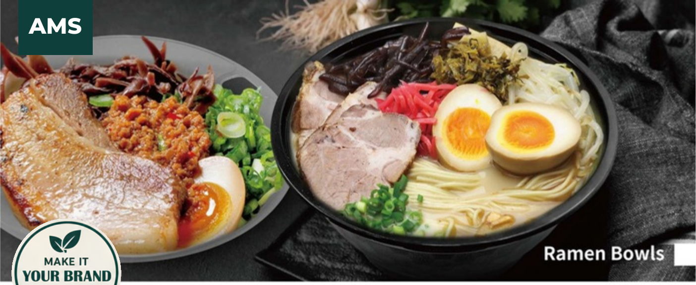
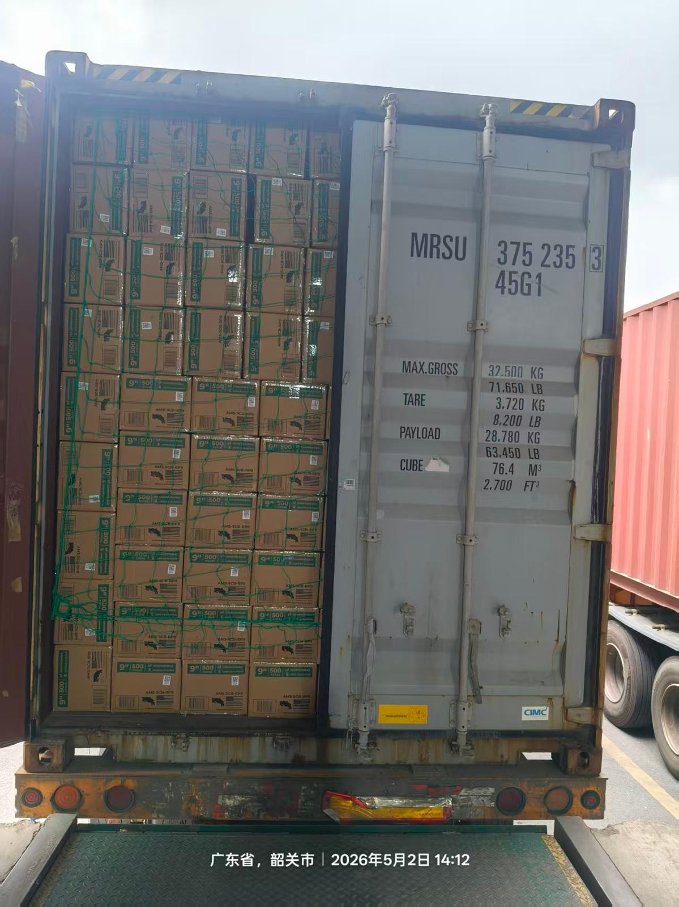
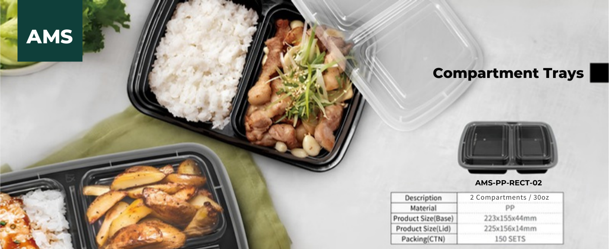
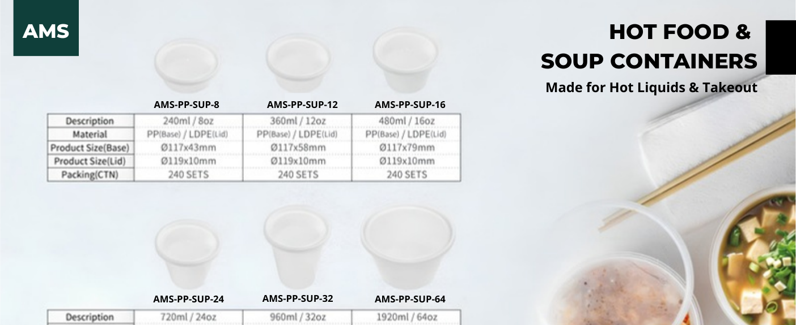
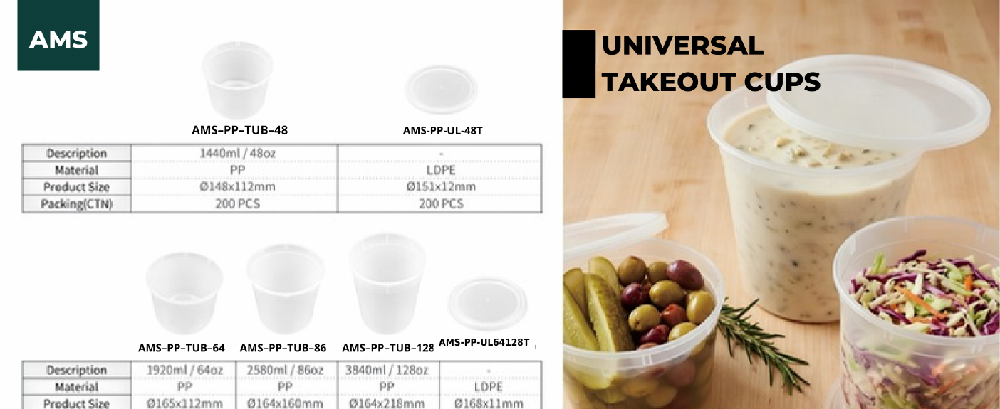
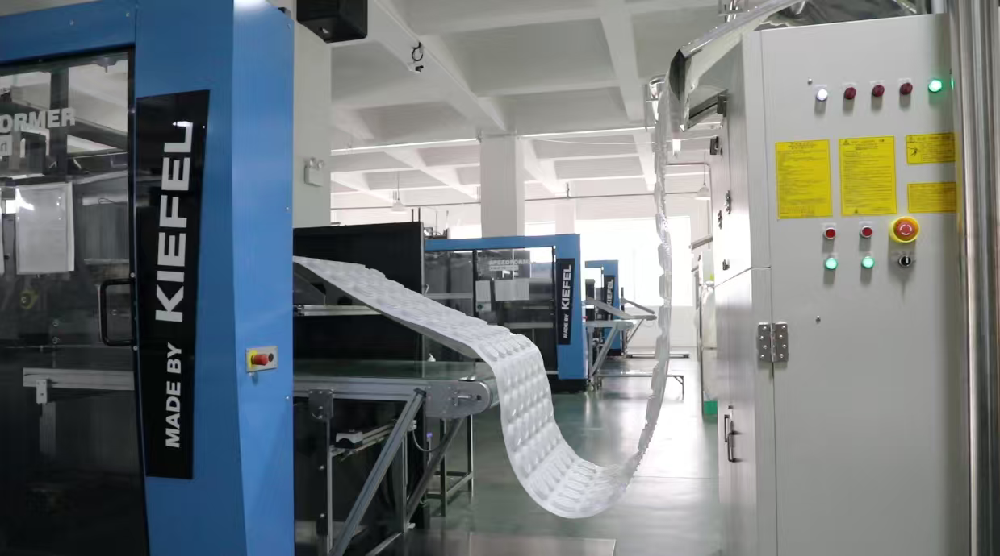
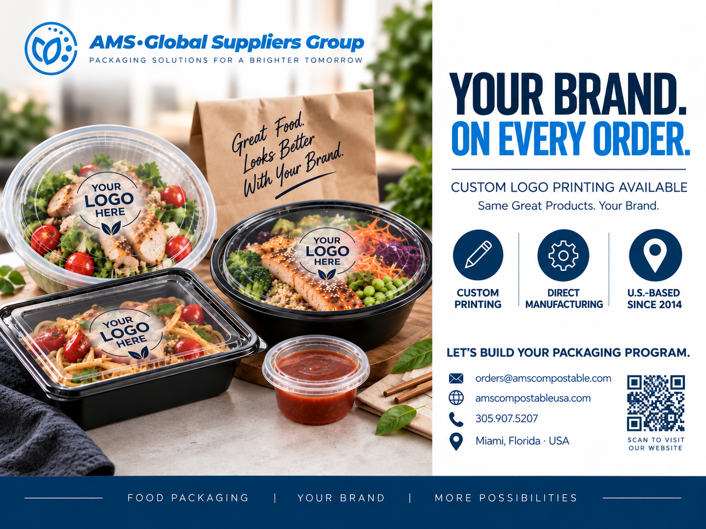
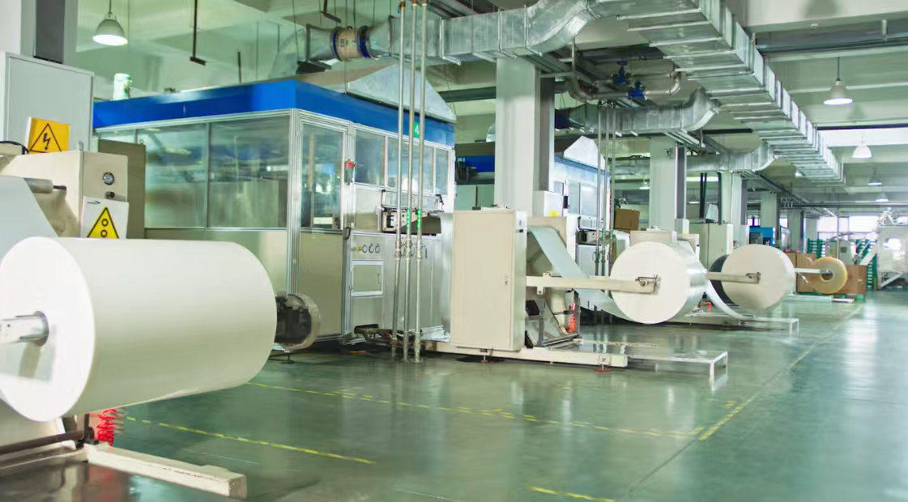
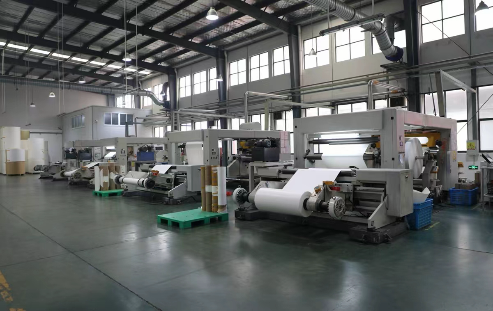
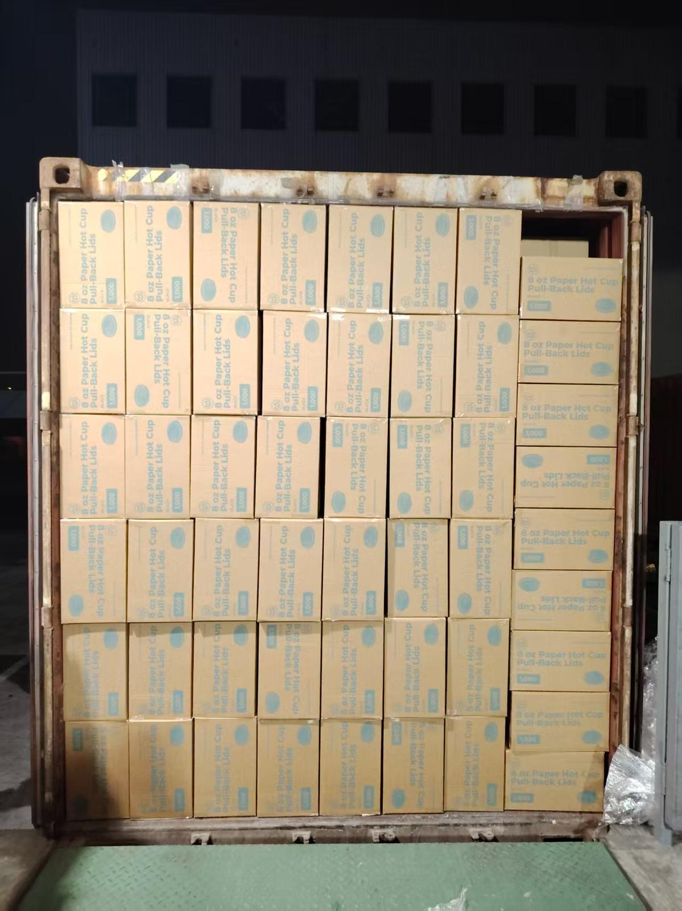

Bowls & Containers
Heat-resistant PP bowls, round containers and formats designed for hot food and takeout.
Build your foodservice packaging program directly with the manufacturer.
Containers, bowls, cups, lids, cutlery and custom-branded packaging for restaurant groups and distributors buying at commercial volume.

At commercial volume, the question isn't only what the package costs. It's how many layers sit between your operation and the source.
AMS structures foodservice packaging programs closer to manufacturing — connecting requirements, production and delivery through a clearer commercial model.

This is not a one-product proposition. AMS develops and sources foodservice packaging programs around performance, volume, branding and repeatability.

Heat-resistant PP bowls, round containers and formats designed for hot food and takeout.

Compartment trays, restaurant takeout formats and coordinated lid systems.

Packaging programs for hot liquids, prepared foods and demanding foodservice applications.

Large-format tubs and takeout packaging for back-of-house and customer-facing use.

Custom logo printing and coordinated branded packaging for qualified commercial programs.

Cups, matching lids, cutlery and complementary foodservice formats can be built into a broader sourcing program.
Make it carry your brand.
At sufficient volume, packaging can do more than hold the food. Custom-printed lids, cups and foodservice packaging turn an operating necessity into a consistent branded customer touchpoint.
Custom printing is available on qualifying programs. Product, print method, volume and artwork requirements are reviewed before production.

Start with performance — heat resistance, fit, handling and operating conditions. Then build branding and repeat supply around the package that actually works for the food.
Performance + repeat supply + private labelConsolidate volume, coordinate multiple SKUs and develop standard or private-label programs with fewer unnecessary handoffs between production and your customers.
Assortment + landed economics + continuity
Commercial packaging is only valuable when the approved program can be produced again. AMS structures programs around defined specifications, production control, quality documentation and shipment coordination.


Product, size, performance requirement, destination and current or target annual volume.
Material, dimensions, lid fit, case pack, branding and supply model.
Review applicable samples, artwork and commercial details before production.
Coordinate production, quality documentation and shipment against the approved program.
Start with what you're buying today. We'll evaluate the product, performance requirements, annual volume, branding opportunity and supply model — then identify whether a direct program makes commercial sense.
Restaurant group? Distributor? Multi-location operator?
Start with the item creating the biggest packaging opportunity. The broader program can follow.
Need compostable packaging instead?
VISIT AMS COMPOSTABLE →